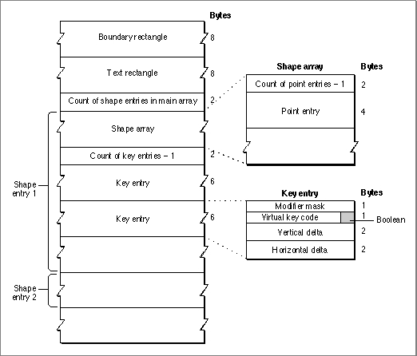
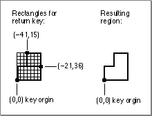

Resource Format
Figure C-10 shows the format for the key-caps resource.Figure C-10 Format of the key-caps resource

The key-caps resource has these elements:Each shape entry in the main array has two components:
- Boundary rectangle. The position of the content region of the Key Caps window.
- Text rectangle. The position of the text box within the Key Caps window.
- Main array. The remainder of the resource. It consists of an array of one shape entry for each key shape.
Each key entry in a shape entry specifies the following information:
- Shape array. A (zero-based) count of entries followed by one or more entries. Each entry is a point, representing the relative pixel offset from the origin of the key, that define a particular key shape. The shape array is a single point for rectangular keys. More complex keys, like the Return key, need two points in their shape array.
- Key array. A set of key entries, describing all the keys with that shape.
Listing C-4 is an abridged example of the data in a key-caps resource, shown in
- Vertical delta and horizontal delta. Vertical and horizontal values to move the pen before drawing the current key. For each shape (that is, for each shape entry in the main array), the pen starts out at the upper-left corner of the content region of the Key Caps window, so the vertical and horizontal delta values for the first key in the key array for that shape are distances from the upper-left corner to the origin of the first key. For subsequent keys in the key array, the deltas are distances from the origin of the previous key to the origin of the current key. Each key is drawn with the shape defined by the shape array for that shape.
- Virtual key code. The virtual key code for the current key. Because it uses virtual key codes, each key-caps resource is tied directly to a particular key-map resource and hardware keyboard but can work with any keyboard-layout resource.
- Modifier mask and Boolean. A modifier mask and a Boolean flag for how to use it. When Key Caps draws the current key, it retrieves the byte that represents the real modifier key state, combines it with this mask performing an
ORorANDoperation as specified, calls theKeyTranslatefunction with the resulting modifier byte and the virtual key code from the key-caps resource, and draws the resulting character or characters in the current key's location. The modifier mask is only required for non-ADB keyboards, which use artificial modifier key states to overlap the key codes for arrow keys and keypad operator keys. For other keyboards, the mask is 0 and the flag is set to specify anORoperation.
Rez format.Listing C-4 Sample key-caps resource data in Rez format
resource 'KCAP' ($01) { {60, 45, 220, 455}, /* boundsRect */ {12, 42, 36, 368}, /* textRect */ { { {21, 21} }, { /* Shape No. 1 */ 0, or, $35, 50, 10; /* escape */ 0, or, $12, 0, 20; /* 1 ! */ 0, or, $13, 0, 20; /* 2 @ */ ... 0, or, $7D, 0, 20; /* Down arrow */ 0, or, $7E, 0, 20; /* Up arrow */ 0, or, $41, 0, 80; /* Keypad . */ 0, or, $55, -20, 0; /* Keypad 3 */ ... }; { {21, 31} }, { /* Shape No. 2 */ 0, or, $30, 70, 10; /* Tab */ 0, or, $33, -20, 260 /* Backspace */ }; ... { {-21, 36}; {-41, 15} }, { /* Shape No. 3 */ 0, or, $24, 111, 265 /* Return */ }; ... } };The basic square key has a shape array of{ {21, 21} }, which puts the origin in the upper-left corner of the key. The first key in the key array for this shape is the Escape key (key code $35) in the upper-left corner of the keyboard; this key is at vertical and horizontal delta offsets of (50, 50) from the upper-left corner of the window's content region. The next key with this shape is immediately to the right, with its origin at delta offsets of (0, 20) from the origin of the previous key.The next shape is the slightly wider key with a shape array of
{ {21, 31} }, used for the Tab and Backspace keys. The origin of the Tab key is at offsets (70, 10) from the upper-left corner of the window's content region (which puts the Tab key one row below the Escape key).The shape array for the Return key is
{ {-21, 36}; {-41, 15} }, which means that it is the union of two rectangles: the first rectangle is from the origin of the key to the first point, and the second rectangle is from the first point to the second point. (Both points are measured relative to the key origin, however.) This shape array puts the Return key's origin in the lower-left corner of the key. See Figure C-11. The origin is at offsets (111, 265) from the upper-left corner of the window's content region.Figure C-11 Shape array and resulting region for the Return key
